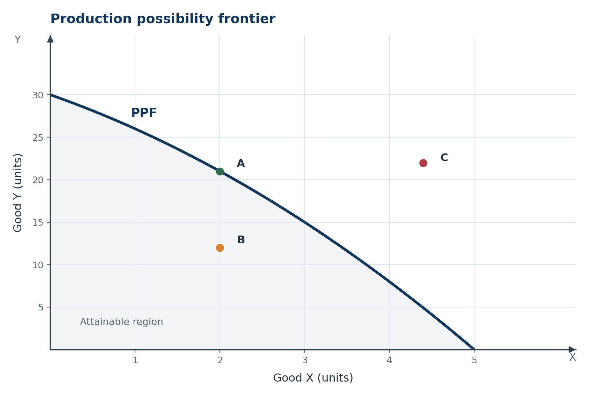
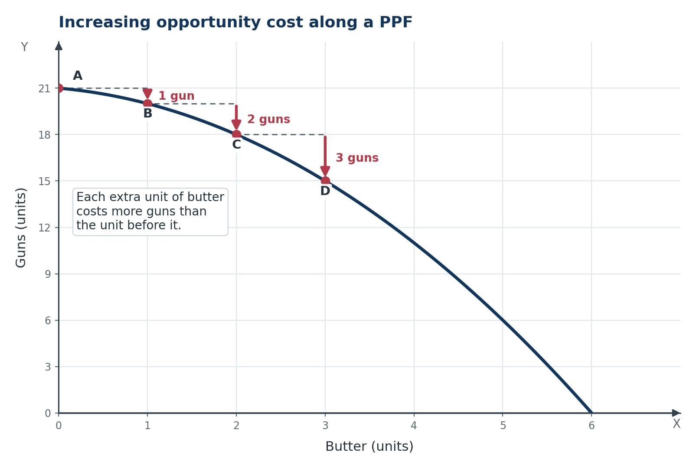
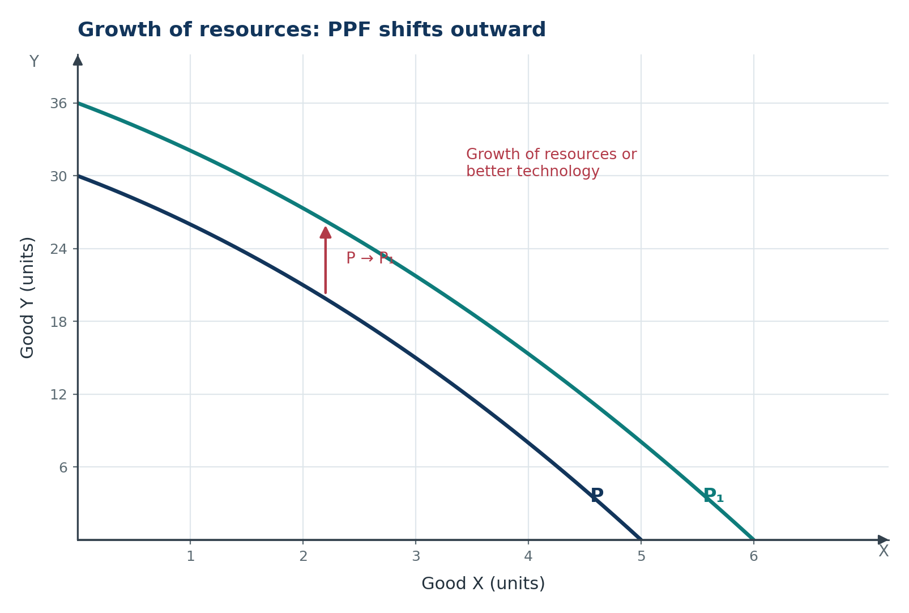
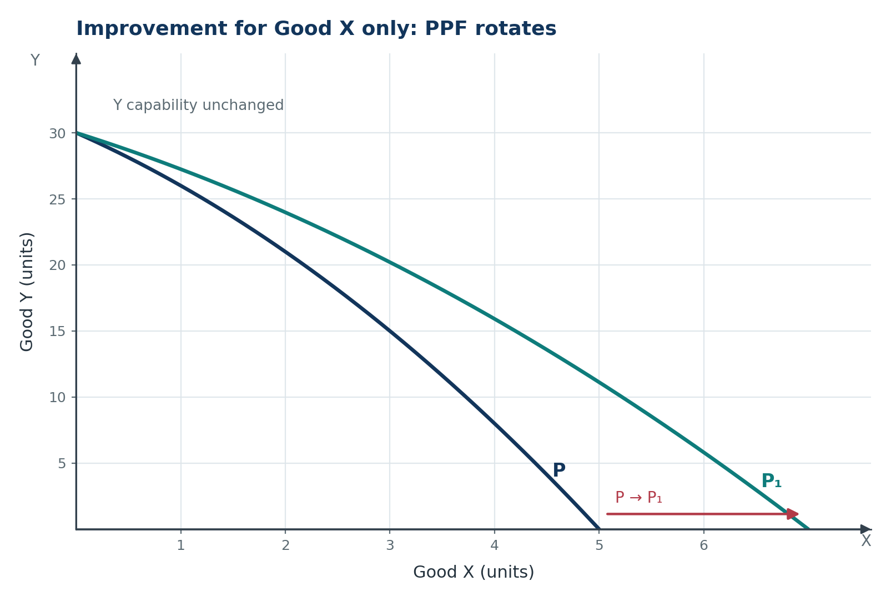

Microeconomics · Class 11Chapter 1Notes + quick revision
Introduction to Microeconomics
Every economy faces the same squeeze: unlimited wants, limited resources, and resources that can always be used another way. This chapter gives that squeeze a name — the economic problem — and builds the tools that follow it everywhere: opportunity cost, the production possibility frontier, and the micro/macro and positive/normative distinctions.
Chapter at a glance
Nine stops: from the mismatch that creates economics to the two pairs of distinctions examiners test. Tap a card to jump straight in.
The one-line idea: economics studies how people and societies choose to use scarce resources that have alternative uses, so every choice carries a forgone alternative.
The core question: how does a society allocate scarce resources among competing wants?
Key Terms — Read These First
The words that carry marks. Read them once now, then test yourself after the chapter.
- Economy
- A system by which people obtain a living through production, consumption and capital formation.
- Scarcity
- The supply of a resource is limited in relation to the demand for it.
- Economic problem
- The problem of choice involving unlimited wants and limited resources that have alternative uses.
- Allocation of resources
- Assigning scarce resources so that society's wants are satisfied as fully as possible.
- Opportunity cost
- The value of the next best alternative forgone when a choice is made.
- Production possibility frontier (PPF)
- The possible combinations of two goods an economy can produce with given resources and technology, assuming full and efficient use.
- Marginal rate of transformation (MRT)
- The units of one good sacrificed to produce one additional unit of the other; the absolute slope of the PPF.
- Attainable point
- A combination on or inside the PPF that the economy can produce.
- Efficient point
- A combination on the PPF where more of one good requires less of the other.
- Microeconomics
- The study of individual units — a consumer, firm, industry or single market; also called price theory.
- Macroeconomics
- The study of economy-wide aggregates such as national income, output, the price level and employment; also called income and employment theory.
- Positive economics
- The study of economic facts and relationships as they are; its statements are testable.
- Normative economics
- The study of what ought to be; it involves value judgements and recommends action.
Scarcity, Choice and the Economic Problem
The idea of this section. Economics begins with a mismatch: wants never end, resources do, and every resource can be used in more than one way. That mismatch is not a temporary shortage — it is the permanent condition that forces choice.
1.1 What an economy does
Definition. An economy is a system by which people obtain a living through production, consumption and capital formation.
- Production — converting resources into goods and services.
- Consumption — using goods and services to satisfy wants.
- Capital formation — setting aside part of current output as machines, buildings and inventories, so future production rises.
Economic agents — households, firms and the government — make these decisions.
Example. A Punjab farmer grows wheat (production), the family eats part of it (consumption), and the surplus buys a tractor (capital formation). The tractor is not consumed now; it raises next year's output.
1.2 Why scarcity is the root of the economic problem
Definition. Scarcity means that the supply of a resource is limited in relation to the demand for it.
Three facts together produce the economic problem.
- Human wants are unlimited. A student who gets a phone soon wants earphones; satisfying one want creates another.
- Resources are scarce. Land, labour, capital and entrepreneurship are available in limited quantities.
- Resources have alternative uses. A hectare can grow wheat or hold a school; a worker can join a factory or drive a taxi. Using a resource for one purpose means giving up another.
Definition. The economic problem is the problem of choice involving the satisfaction of unlimited wants out of limited resources that have alternative uses.
In simple words. Wants are unlimited, means are limited, and every means can be used in more than one way. That combination forces everyone to choose.
Scarcity is not poverty. Scarcity exists even in a rich economy: its resources are still not enough to satisfy every want at once. Poverty is a low level of income; scarcity is limited means relative to unlimited wants.
1.3 Economics as a social science
Definition. Economics is a social science that studies how a society chooses to use its scarce resources, which have alternative uses, to produce goods and services and to distribute them among different groups.
It is a social science because it studies human behaviour systematically: it observes choices, builds theories and tests predictions. It is not a physical science, because its subject matter is people and institutions, not matter and energy.
Why the definition mentions distribution. Production alone is not enough. The same output can leave one group rich and another poor, so economics studies both how goods are produced and how they are shared.
- Q1. Why is scarcity called the root of the economic problem?
- Q2. A student has four free hours and spends all of them revising Economics, leaving no time for Mathematics. Identify the scarce resource, the alternative use and the choice.
- Q3. Why do more alternative uses make choice more difficult?
Show answers
- Because wants are unlimited, resources are scarce, and those resources have alternative uses. Together they force a choice.
- The scarce resource is time. Its alternative use is revising Mathematics. The choice is Economics instead of Mathematics.
- Each extra use is another forgone benefit to compare, so more options mean more ranking and a higher cost of choosing.
The Central Problems of an Economy
The idea of this section. Every economy, rich or poor, market or planned, must answer the same three questions. The answers differ; the questions do not.
Allocation of resources means assigning scarce resources so that society's wants are satisfied as fully as possible. Every economy must answer three central problems; other problems such as inflation and unemployment grow out of them.
2.1 What to produce?
This has two parts:
- Which goods — consumer goods such as rice and clothes, or capital goods such as machines? Civil goods such as medicines, or defence goods such as aircraft?
- How much of each selected good?
Example. A state can build a 500-bed hospital or an industrial park. The hospital improves health now; the park creates jobs later. Choosing more capital goods today means less consumption today but a larger productive capacity tomorrow.
2.2 How to produce?
This concerns the technique of production — the combination of inputs used.
Definition. A labour-intensive technique uses more labour and less capital per unit of output; a capital-intensive technique uses more capital and less labour.
Example. A garment factory can sew shirts with 60 tailors or with 6 automated machines and 12 operators. Both produce shirts; they use different mixes of labour and capital.
The choice depends on factor availability and prices. India has abundant labour, so labour-intensive methods are common; Japan, with scarce labour and abundant capital, uses capital-intensive methods. Quality and employment goals also matter: a technique that is cheap per shirt may still be rejected if it destroys too many jobs.
2.3 For whom to produce?
This is the problem of distribution — who will consume the output. Production is carried out by land, labour, capital and entrepreneurship, and output is distributed as factor incomes: rent, wages, interest and profit. So “for whom” is ultimately about the distribution of income.
- Personal distribution — how income is shared among households.
- Functional distribution — how income is shared among the factors of production.
Example. A Noida phone factory can target premium buyers or budget buyers. The choice changes not just the price but who can afford the phone.
2.4 Full use and growth of resources
Full utilisation. Idle factories or unemployed graduates mean the economy operates inside its PPF; the waste is unused capacity, not missing capacity.
Growth of resources. More or better resources and technology shift the PPF outward.
Keep the two apart. Full use is about operating on the frontier. Growth is about pushing the frontier outward. Unemployment is a point inside; growth is a new curve.
- Q1. Why are these called central problems?
- Q2. A state is choosing between a medical college and an industrial park. Identify the central problem, and state one “how” and one “for whom” decision that follows.
- Q3. Why is “for whom to produce” a question about income distribution?
Show answers
- They are the most basic questions every economy must answer; unemployment and inequality arise from the answers.
- “What to produce”: health services versus industrial output. “How”: labour- or capital-intensive construction. “For whom”: whether seats or jobs go to low-income households.
- Output is distributed as rent, wages, interest and profit, so factor ownership and prices decide who can buy the goods.
Opportunity Cost
The idea of this section. Once resources have alternative uses, every yes is also a no. Opportunity cost gives that no a value, and it is the concept that turns “choice” from a slogan into a number.
3.1 Definition
Definition. Opportunity cost is the value of the next best alternative forgone when a choice is made.
Because resources are scarce and have alternative uses, choosing one option means rejecting another; the best rejected option is the true cost.
In simple words. The real cost of what you choose is the best thing you did not choose.
3.2 Only the next best alternative counts
Opportunity cost is not the sum of everything given up. It is the value of the single best alternative that would actually have been chosen.
Example. Meera earns ₹40,000 in a bank. She gets offers of ₹30,000 as an executive and ₹35,000 as a journalist.
| Choice | Income | Next best alternative | Opportunity cost |
|---|---|---|---|
| Stay in the bank | ₹40,000 | Journalist at ₹35,000 | ₹35,000 |
| Become a journalist | ₹35,000 | Bank at ₹40,000 | ₹40,000 |
| Become an executive | ₹30,000 | Bank at ₹40,000 | ₹40,000 |
Adding the two rejected offers is wrong: Meera cannot take both jobs, so only the best one is forgone. Staying in the bank costs ₹35,000, not ₹65,000.
3.3 Examples
Land. One hectare can produce 1,000 kg of rice or 1,500 kg of pulses. Choosing pulses costs 1,000 kg of rice; choosing rice costs 1,500 kg of pulses.
Time. An hour spent watching a film could have been spent revising. If revision is the next best use, the film's opportunity cost includes the revision forgone.
Opportunity cost is wider than money cost. A shopkeeper who owns his shop forgoes the rent he could have earned by letting it out; that rent is a cost even though no rent is paid.
Exam line. Opportunity cost is a real cost, not necessarily a money cost. It exists whenever a choice excludes an alternative.
3.4 Opportunity cost and the PPF
Along a PPF, more X means withdrawing resources from Y. The Y sacrificed for one more X is X's opportunity cost; because the slope measures this sacrifice, the PPF is also called the opportunity cost curve.
On a straight-line PPF the opportunity cost is constant. On the usual concave PPF it rises as X expands — the point developed in Section 4.
- Q1. “Opportunity cost is the sum of all alternatives forgone.” Correct this statement.
- Q2. A farmer can grow 800 kg of wheat or 1,200 kg of mustard on one hectare. He chooses wheat. What is the opportunity cost? What would it be if he chose mustard?
- Q3. Why is the PPF called the opportunity cost curve?
Show answers
- False. Opportunity cost is the value of the next best alternative only, not the sum of every alternative.
- Choosing wheat gives up 1,200 kg of mustard. Choosing mustard gives up 800 kg of wheat.
- More of one good means less of the other. The slope measures the Y sacrificed per extra unit of X, which is X's opportunity cost.
The Production Possibility Frontier
The idea of this section. The PPF is scarcity drawn as a line. Everything inside is affordable, everything outside is not, and the shape of the line records the opportunity cost of moving along it.
4.1 Definition and assumptions
Definition. The production possibility frontier (PPF) shows the possible combinations of two goods an economy can produce with given resources and technology, assuming full and efficient use.
Also called the production possibility curve or transformation curve.
The PPF assumes:
- only two goods are produced;
- resources are fixed in quantity but transferable between uses;
- resources are fully and efficiently used;
- technology is constant.
A fifth feature is not an assumption but the reason for the curve's shape: resources are not equally efficient in both uses. That is why the PPF is normally concave rather than a straight line.
4.2 A production possibility schedule
| Combination | Good X (units) | Good Y (units) | Y sacrificed (units) | MRT = Y sacrificed ÷ X gained |
|---|---|---|---|---|
| 1 | 0 | 30 | — | — |
| 2 | 1 | 26 | 4 | 4 |
| 3 | 2 | 21 | 5 | 5 |
| 4 | 3 | 15 | 6 | 6 |
| 5 | 4 | 8 | 7 | 7 |
| 6 | 5 | 0 | 8 | 8 |
Each step adds one unit of X, but the Y sacrificed rises from 4 to 8. This is increasing marginal opportunity cost.

What to notice. The curve slopes downward and is concave: each extra unit of X costs more Y. The shaded area is attainable; the frontier is its upper boundary; C is beyond current capacity.
4.3 Why the PPF slopes downward
Resources used for X are taken from Y. With full employment, more X means less Y. The downward slope is therefore the graphical form of opportunity cost: the only way to get more X is to give up some Y.
4.4 Why the PPF is concave: increasing MRT
Definition. The marginal rate of transformation (MRT) is the units of one good sacrificed to produce one additional unit of the other. It is the absolute slope of the PPF.
ΔY is the fall in Good Y, taken as a positive number (the sacrifice), and ΔX is the rise in Good X.
For the schedule, moving from 2 to 3 units of X:
So the third unit of X costs 6 units of Y. The slope of the curve is −MRT, because Y falls as X rises.
The PPF is concave to the origin because MRT increases as X expands: in the table it rises from 4 to 5 to 6 to 7 to 8.
Why? Resources are not equally efficient. The first resources shifted into X are relatively best at X and least costly to withdraw from Y. As X expands, resources better at Y are shifted, so each extra unit of X costs more Y.

What to notice. The arrows get longer as butter increases. That is rising opportunity cost drawn directly on the curve.
Say it fully. “The PPF is concave because opportunity cost increases” is true but incomplete. The formal cause is rising MRT, which comes from resources being unequally efficient. If resources were equally efficient, MRT would be constant and the PPF a straight line.
- Q1. Define the PPF and state any three assumptions.
- Q2. Using the schedule, calculate MRT when X rises from 4 to 5 units and from 1 to 2 units. Why do the values differ?
- Q3. Why is a PPF normally concave rather than a straight line?
Show answers
- The PPF shows possible combinations of two goods with given resources and technology, assuming full and efficient use. Assumptions: two goods; fixed but transferable resources; full and efficient use; constant technology; unequal resource efficiency.
- From 4 to 5 units, Y falls from 8 to 0, so MRT = 8; from 1 to 2 units, Y falls from 26 to 21, so MRT = 5. Later units of X use resources better suited to Y.
- A straight line means constant MRT, which requires equal resource efficiency. Real resources differ, so shifting them raises MRT and makes the curve concave.
Reading the PPF
The idea of this section. A PPF is not just a curve to draw; it is a map with three zones. Knowing which zone a point sits in answers most one-mark and three-mark questions.
5.1 Attainable, efficient and unattainable points
Attainable combinations lie on or inside the PPF. Efficient combinations lie on it: more of one good would require less of the other — this is productive efficiency. Inefficient combinations lie inside: idle resources allow more of one good without giving up the other. Unattainable combinations lie outside.
| Position | Meaning | Example in Figure 1.1 |
|---|---|---|
| On the PPF | Attainable and efficient; full use of resources | A |
| Inside the PPF | Attainable but inefficient; idle or misused resources | B |
| Outside the PPF | Unattainable with current resources and technology | C |
In Figure 1.1, A is efficient, B is attainable but inefficient, and C is unattainable. An economy can move from B towards A by using its existing capacity better; it cannot reach C without growth.
Warning. Inside points are attainable, not unattainable; only outside points are unattainable. “Inside” means the economy is wasting capacity, not that the combination is impossible.
5.2 Efficiency is not fairness
The PPF shows productive efficiency, not the best point for society. Every point on the curve is technically efficient, yet they distribute goods very differently. Which point is desirable depends on preferences and distribution — a normative question.
Example. A point with many hospitals and few factories can be efficient, and so can the reverse. The PPF does not say which is better; it only says both use all resources.
- Q1. “A point inside the PPF is unattainable.” Is this true?
- Q2. Point C in Figure 1.1 is outside the PPF. What does this mean, and what change could make it attainable?
- Q3. Does an efficient point on the PPF also tell us the bundle is fair? Explain.
Show answers
- False. A point inside is attainable but inefficient; only outside points are unattainable.
- C cannot be produced now. Growth of resources or better technology, especially for Y, could move the frontier through C.
- No. The PPF shows productive efficiency only. Fairness depends on how output is distributed, which is a normative question.
Shifting and Rotating the PPF
The idea of this section. A PPF changes in two different ways, and examiners test whether you can tell them apart. Capacity for both goods shifts the whole curve; capacity for one good rotates it.
6.1 Shifts of the PPF
When resources or technology change for both goods, the whole curve shifts.
Outward shift. More or better resources, or better technology for both goods, shift the PPF rightward. Sources include new natural resources, more labour, foreign capital, skill development and better health.
Inward shift. A decrease in resources or technological degradation shifts the PPF leftward. An earthquake destroying factories or a war damaging infrastructure can shrink capacity.

What to notice. Both intercepts rise, and previously unattainable bundles may become attainable. This is growth of capacity, not movement along the curve.
Important. Unemployment does not shift the PPF. It moves the economy inside the existing frontier. The curve assumes full use; idle resources are a failure to reach it.
6.2 Rotations of the PPF
When capacity changes for only one good, the PPF rotates around the intercept of the unchanged good.
- Outward on the X-axis: improvement for Good X only; maximum X rises, maximum Y is unchanged.
- Outward on the Y-axis: improvement for Good Y only; maximum Y rises, maximum X is unchanged.
- Inward on an axis: a fall in capacity for that good rotates the curve inward on that axis.

What to notice. The Y-intercept is unchanged, while the X-intercept rises. The curve is flatter at every level of X. This is a rotation, not a general outward shift.
6.3 Uses and limitations of the PPF
The PPF shows scarcity as the boundary, choice and opportunity cost as movement along the curve, efficiency on the curve, and growth as a shift or rotation.
Its limitations: it assumes only two goods, fixed resources, constant technology and full efficient use; it treats resources as easily transferable; it shows productive efficiency only, not fairness; and it ignores trade.
- Q1. Why does massive unemployment not shift the PPF left?
- Q2. A technology improves only cloth production. What happens to the PPF?
- Q3. State two uses and two limitations of the PPF.
Show answers
- The PPF assumes full use. Unemployment means existing capacity is idle, so the economy operates inside the curve; capacity has not fallen.
- Only cloth capability rises, so the PPF rotates outward on the cloth axis; the intercept for the other good is unchanged.
- Uses: shows scarcity, choice, opportunity cost, efficiency and growth. Limitations: only two goods, fixed resources and technology, resources treated as easily transferable, no fairness, no trade.
Microeconomics and Macroeconomics
The idea of this section. The same economy can be studied close up or from a distance. Micro is the close-up; macro is the wide shot. Neither is more important — they answer different questions.
7.1 Microeconomics
Definition. Microeconomics (Greek mikros, small) studies the behaviour of individual units of an economy — a consumer, household, firm, industry or the market for a single commodity.
It examines consumer choice, a firm's output and price, and commodity prices. Its tools are demand and supply.
Examples. The price of onions in Delhi; a firm hiring ten workers; the market for one brand of phone.
Because it mainly studies price determination in individual markets, microeconomics is called price theory.
7.2 Macroeconomics
Definition. Macroeconomics (Greek makros, large) studies aggregates of the economy as a whole — national income, aggregate output, aggregate consumption, the general price level, employment and the balance of payments.
Its tools are aggregate demand and aggregate supply.
Examples. India's GDP growth; the inflation rate; the unemployment rate; the budget deficit.
Because it focuses on economy-wide income and employment, macroeconomics is called income and employment theory.
7.3 Differences
| Basis | Microeconomics | Macroeconomics |
|---|---|---|
| Meaning | Individual units | Aggregates of the whole economy |
| Main tools | Demand and supply | Aggregate demand and aggregate supply |
| Basic objective | Price of a commodity or factor | Level of income and employment |
| Aggregation | Limited; market demand sums individual demands | Highest; aggregate demand is for the whole economy |
| Standard assumption | Macro variables such as national income are constant | Micro variables such as individual prices are constant |
| Other name | Price theory | Income and employment theory |
7.4 Interdependence
The branches are not watertight. A petrol price rise is micro, but it raises transport costs and inflation — a macro outcome. A recession lowers national income and demand in individual markets.
Exam line. The division is a matter of convenience, not a wall. Micro decisions add up to macro outcomes, and macro conditions reshape micro choices.
- Q1. Why is micro called price theory and macro income and employment theory?
- Q2. Classify: (a) the price of tomatoes in Mumbai; (b) India's inflation rate; (c) a firm hiring ten workers; (d) national income.
- Q3. How can one firm's wage decision matter for macro policy?
Show answers
- Micro mainly studies how individual commodity and factor prices are determined. Macro mainly studies economy-wide income and employment.
- (a) Micro; (b) macro; (c) micro; (d) macro.
- Wage decisions across firms add up to the national wage level, affecting costs, prices, inflation and employment.
Positive and Normative Economics
The idea of this section. One question asks what is true; the other asks what is desirable. Mixing them is the fastest way to lose a classification mark.
8.1 Positive economics
Definition. Positive economics studies economic facts and relationships as they are — what is, was or will be. It describes and predicts.
Positive statements can be tested against data: “India's population is above 140 crore”; “a higher cigarette tax reduces smoking.” Positive economics is neutral between ends — it can describe a policy's effects without saying the policy is good.
Warning. “Positive” does not mean “correct” or “optimistic”. A positive statement can be false: “India is larger than China in land area” is positive, though false, because it can be checked.
8.2 Normative economics
Definition. Normative economics studies what ought to be — how problems should be solved. It involves value judgements.
“The government should spend more on healthcare” is normative: data can show what spending would achieve, but not that health ought to have priority over defence. Normative economics is suggestive: it recommends action, and the final judgement rests on values.
8.3 How to identify the two
- Should, ought, must, fair, better, justified usually signal normative statements: they recommend or evaluate.
- Is, was, will be, causes, leads to, if–then usually signal positive statements: they describe or predict.
Example. “Rising food prices hurt poor households, so the government should expand ration shops.” The first clause is positive; the second is normative. One sentence can contain both.
8.4 A different distinction from micro and macro
Micro/macro is the level of analysis; positive/normative is the type of statement. They combine in four ways.
| Level | Positive | Normative |
|---|---|---|
| Micro | “The price of wheat rose by 4% in June.” | “Wheat should be subsidised for poor households.” |
| Macro | “India's GDP grew by 7% last year.” | “The RBI should cut interest rates to raise growth.” |
Test yourself. Ask two separate questions: “Is it about a part or the whole?” (micro or macro) and “Is it a fact or a value judgement?” (positive or normative). The two answers are independent.
- Q1. Define positive and normative economics. Why does “positive” not mean “correct”?
- Q2. Classify: (a) “India's population crossed 140 crore.” (b) “India should control its population.” (c) “A higher cigarette tax reduces smoking.” (d) “The rich should pay more tax.” (e) “Demonetisation was justified.”
- Q3. Can a normative statement be tested as true or false with data?
Show answers
- Positive studies what is and is testable; normative studies what ought to be and involves value judgements. “Positive” means factual, not correct.
- (a) Positive; (b) normative; (c) positive; (d) normative; (e) normative — “justified” is a value judgement.
- Not by data alone. Data can show a policy's consequences, but whether they are desirable depends on values. Two people can accept the same data and still disagree.
Common Mistakes, Recap and Exam Practice
The idea of this section. Most lost marks come from a handful of confusions: opportunity cost with the sum of alternatives, an inside point with an impossible one, a shift with a rotation, and positive with “good”. Fix those and the chapter becomes quick revision.
9.1 Common mistakes
| Mistake | Correct idea |
|---|---|
| “Opportunity cost is the sum of all alternatives.” | It is the value of the next best alternative only. |
| “A point inside the PPF is unattainable.” | It is attainable but inefficient; only points outside are unattainable. |
| “The PPF is concave because resources are equally efficient.” | It is concave because resources are not equally efficient, so MRT rises. |
| “Unemployment shifts the PPF left.” | It moves the economy inside the existing PPF. |
| “Growth for one good shifts the whole PPF right.” | It rotates the PPF on that good's axis. |
| “MRT = ΔX ÷ ΔY.” | MRT = Y sacrificed ÷ X gained, the absolute slope. |
| “Positive economics means good economics.” | It means factual and testable; it can be false. |
9.2 Chapter recap
- Scarcity, unlimited wants and alternative uses together create the economic problem, which is a problem of choice.
- Every economy must decide what to produce, how to produce and for whom; full use and growth of resources are related questions.
- Opportunity cost is the value of the next best alternative forgone, not the total of all rejected options.
- The PPF shows maximum combinations of two goods with given resources and technology, assuming full and efficient use.
- It is concave because MRT rises; resources are not equally efficient in both uses.
- Points on the PPF are efficient, inside points are attainable but inefficient, and outside points are unattainable.
- Micro is price theory; macro is income and employment theory.
- Positive statements describe and are testable; normative statements prescribe and rest on values.
9.3 Formula sheet
| Concept | Formula | Remember |
|---|---|---|
| Opportunity cost | Value of the next best alternative forgone | Not the sum of all alternatives |
| Marginal rate of transformation | MRT = (units of Y sacrificed) ÷ (units of X gained) | The absolute slope of the PPF |
| Marginal opportunity cost | Units of one good sacrificed for one more unit of another | Equals MRT when X rises by one unit |
9.4 Exam-style questions
Very short answer (1 mark)
- Define opportunity cost.
- What is MRT?
- Why does the PPF slope downward?
- Which branch studies national income and the general price level?
- “The government should reduce inequality.” Positive or normative?
Short answer (3 marks)
- Explain any three reasons why an economic problem arises.
- Distinguish micro from macroeconomics on any three bases.
- A PPF schedule gives the combinations below. Calculate MRT as X rises from 1 to 2 units and from 2 to 3 units, and comment.
| Good X (units) | 0 | 1 | 2 | 3 |
|---|---|---|---|---|
| Good Y (units) | 20 | 17 | 13 | 8 |
- Explain the effect on the PPF of (a) an earthquake that destroys factories and (b) a technology that improves only cloth production.
Long answer (4–6 marks)
- Explain the three central problems of an economy with examples.
- Why is the PPF concave? Explain with a schedule and MRT.
- Distinguish positive from normative economics with examples. How is this different from micro/macro?
Answer pointers
Very short answers.
- The value of the next best alternative forgone.
- Units of one good sacrificed for one more unit of the other; the absolute slope of the PPF.
- More of one good requires transferring resources from the other, so the other must fall.
- Macroeconomics.
- Normative, because “should” expresses a value judgement.
Short answers.
- Unlimited wants, scarce resources and alternative uses; together they force choice.
- Individual units versus aggregates; demand and supply versus aggregate demand and aggregate supply; price versus income and employment determination.
- From 1 to 2 units, Y falls from 17 to 13, so MRT = 4. From 2 to 3 units, Y falls from 13 to 8, so MRT = 5. Rising MRT fits a concave PPF.
- (a) Resources are destroyed, so the PPF shifts inward. (b) Only cloth capability rises, so the PPF rotates outward on the cloth axis.
Long answers.
- What: choose goods and quantities, e.g. hospitals versus industrial parks. How: labour- or capital-intensive techniques. For whom: distribute output through rent, wages, interest and profit.
- Define MRT and give a schedule with rising MRT. Explain unequal resource efficiency: as X expands, resources better suited to Y are shifted, so each extra X costs more Y. Rising MRT makes the curve concave.
- Positive: what is, testable, e.g. “prices rose by 6%”. Normative: what ought to be, value judgement, e.g. “prices should not rise”. Micro/macro concerns individual units versus aggregates; either can be positive or normative.
9.5 One-minute revision
| Must know | One-line version |
|---|---|
| Economic problem | Unlimited wants plus scarce resources with alternative uses force choice. |
| Central problems | What, how and for whom to produce. |
| Opportunity cost | Value of the next best alternative forgone. |
| PPF | Maximum combinations of two goods with given resources and technology. |
| Points | On = efficient; inside = attainable but inefficient; outside = unattainable. |
| Shifts | Growth shifts; one-good change rotates; unemployment moves inside. |
| Micro vs macro | Individual units and price theory versus aggregates and income theory. |
| Positive vs normative | What is and testable versus what ought to be and value judgement. |
Quick revision, done properly
How to use this file (30 seconds): read one block → cover it → answer the recall questions aloud → open the answer to check → move on. Total time: about 18 minutes.
- 01Readone block of notes
- 02Coverthe page and recall
- 03Answerthe drill aloud
- 04Checkand move on
24 recall questions · one confusion clinic · one rapid-fire table · one blank-page test.
Scarcity, central problems and opportunity cost
The chapter in 12 lines
- Economics studies choice under scarcity.
- An economy produces, consumes and forms capital.
- Wants are unlimited, resources are scarce, and resources have alternative uses.
- Those three facts create the economic problem: choice.
- Every economy answers what, how and for whom to produce.
- What = which goods and how much.
- How = the technique: labour- or capital-intensive.
- For whom = distribution through factor incomes.
- Full use means operating on the PPF; growth means shifting it outward.
- Opportunity cost is the value of the next best alternative forgone.
- Only the single best rejected alternative counts.
- The PPF slope measures opportunity cost.
The words that carry marks
| Term | Meaning | Watch out |
|---|---|---|
| Scarcity | Supply of a resource is limited relative to demand | Not the same as poverty |
| Economic problem | Choice with unlimited wants and limited resources with alternative uses | Choice is the core |
| Allocation | Assigning scarce resources to satisfy wants | Every economy must do it |
| Opportunity cost | Value of the next best alternative forgone | Not the sum of all alternatives |
| Factor incomes | Rent, wages, interest and profit | They decide “for whom” |
One-line test: if the question says “limited means and unlimited wants”, answer economic problem. If it says “best alternative given up”, answer opportunity cost.
The three central problems
| Problem | Question | Example |
|---|---|---|
| What to produce | Which goods, and how much of each? | Hospital versus industrial park; consumer versus capital goods |
| How to produce | Which technique and input mix? | 60 tailors versus 6 machines and 12 operators |
| For whom to produce | Who gets the output? | Premium versus budget phone buyers |
| Idea | What happens | Picture |
|---|---|---|
| Full use | Existing capacity is used fully | Move from inside the PPF to the curve |
| Growth | More or better resources or technology | Shift the PPF outward |
Opportunity cost, worked
Meera earns ₹40,000 in a bank; her alternatives are ₹30,000 as an executive and ₹35,000 as a journalist.
| Choice | Next best alternative | Opportunity cost |
|---|---|---|
| Stay in the bank | Journalist at ₹35,000 | ₹35,000 |
| Become a journalist | Bank at ₹40,000 | ₹40,000 |
One hectare gives 1,000 kg rice or 1,500 kg pulses. Choosing pulses costs 1,000 kg rice; choosing rice costs 1,500 kg pulses.
Trap: adding the rejected options is wrong. Meera cannot take both jobs, so her opportunity cost is ₹35,000, not ₹65,000.
Recall drill — Session 1
Define the economic problem.
Show answer
The problem of choice involving the satisfaction of unlimited wants out of limited resources that have alternative uses.
Why is scarcity not the same as poverty?
Show answer
Scarcity means limited means relative to unlimited wants and exists even in rich economies. Poverty is a low level of income.
State the three central problems of an economy.
Show answer
What to produce, how to produce, and for whom to produce.
Distinguish labour-intensive from capital-intensive techniques.
Show answer
Labour-intensive uses more labour and less capital per unit of output; capital-intensive uses more capital and less labour.
What does “for whom to produce” mean, and why is it about income distribution?
Show answer
It is the distribution of output. Output is paid out as rent, wages, interest and profit, so factor ownership and prices decide who can buy the goods.
Define opportunity cost and correct the “sum of all alternatives” error.
Show answer
Opportunity cost is the value of the next best alternative forgone. It is not the sum of every rejected option, because only one alternative would actually have been chosen.
Meera earns ₹40,000 in a bank; offers are ₹30,000 and ₹35,000. Find the opportunity cost of staying and of becoming a journalist.
Show answer
Staying: the next best alternative is journalism at ₹35,000, so ₹35,000. Becoming a journalist: the next best is the bank at ₹40,000, so ₹40,000.
One hectare gives 1,000 kg rice or 1,500 kg pulses. Find both opportunity costs.
Show answer
Choosing pulses costs 1,000 kg of rice. Choosing rice costs 1,500 kg of pulses.
The production possibility frontier
Definition and assumptions
The PPF shows the possible combinations of two goods an economy can produce with given resources and technology, assuming full and efficient use. Also called the production possibility curve or transformation curve.
| Assumption | Meaning |
|---|---|
| Two goods | Only Good X and Good Y are produced |
| Fixed but transferable resources | Quantity is fixed; inputs can move between uses |
| Full and efficient use | No idle or wasted resources |
| Constant technology | The technique does not change |
| Unequal resource efficiency | Not an assumption but the reason the curve is concave |
The schedule and MRT
| X | 0 | 1 | 2 | 3 | 4 | 5 |
|---|---|---|---|---|---|---|
| Y | 30 | 26 | 21 | 15 | 8 | 0 |
| MRT | — | 4 | 5 | 6 | 7 | 8 |
From X = 2 to X = 3: MRT = (21 − 15) ÷ (3 − 2) = 6. The slope of the PPF is −MRT.
Why concave: resources are not equally efficient. As X expands, inputs better suited to Y are shifted, so each extra X costs more Y. Rising MRT = rising opportunity cost = concave curve.
Reading the curve
| Position | Attainable? | Efficient? | Meaning |
|---|---|---|---|
| On the PPF | Yes | Yes | Full and efficient use — e.g. A |
| Inside the PPF | Yes | No | Idle resources — e.g. B |
| Outside the PPF | No | — | Unattainable now — e.g. C |
Efficiency is not fairness. Every point on the curve is efficient, but they distribute goods differently. Which point is desirable is a normative question.
Shifts and rotations
| Change | Effect on PPF | Intercepts |
|---|---|---|
| Resources or technology improve for both goods | Parallel outward shift | Both rise (5→6 X, 30→36 Y) |
| Resources destroyed for both goods | Parallel inward shift | Both fall |
| Improvement for X only | Rotation outward on X-axis | X rises 5→7; Y stays 30 |
| Improvement for Y only | Rotation outward on Y-axis | Y rises; X unchanged |
| Unemployment | No shift; economy moves inside | Unchanged |
Golden test: did capacity change for both goods? Shift. For one good? Rotation. Did workers simply lose jobs? Move inside.
Recall drill — Session 2
Define the PPF and give its two other names.
Show answer
It shows the possible combinations of two goods an economy can produce with given resources and technology, assuming full and efficient use. Also called the production possibility curve and the transformation curve.
State the four assumptions of the PPF.
Show answer
Two goods; resources fixed in quantity but transferable; resources fully and efficiently used; technology constant. Unequal resource efficiency explains the concave shape.
Using the schedule, find MRT from 0 to 1 unit of X and from 4 to 5 units.
Show answer
0→1: Y falls 30 to 26, so MRT = 4. 4→5: Y falls 8 to 0, so MRT = 8.
Why is the PPF concave?
Show answer
Resources are not equally efficient. As X expands, resources better suited to Y are shifted, so each extra X costs more Y. MRT rises, and rising opportunity cost makes the curve concave.
What does a point inside, on, and outside the PPF mean?
Show answer
Inside: attainable but inefficient (idle resources). On: attainable and efficient. Outside: unattainable with current resources and technology.
Why does unemployment not shift the PPF left?
Show answer
The PPF assumes full use. Unemployment means existing capacity is idle, so the economy operates inside the curve; capacity itself has not fallen.
Distinguish a shift from a rotation of the PPF.
Show answer
A shift changes capacity for both goods, so both intercepts move. A rotation changes capacity for one good, so one intercept moves while the other stays fixed.
A technology improves only Good Y. Describe the change.
Show answer
Only Y capability rises, so the PPF rotates outward around the X intercept: the Y intercept rises, the X intercept is unchanged, and the curve becomes steeper at every X.
Micro vs macro, positive vs normative
Microeconomics and macroeconomics
| Basis | Micro | Macro |
|---|---|---|
| Meaning | Individual units — consumer, firm, industry, one market | Aggregates of the whole economy |
| Tools | Demand and supply | Aggregate demand and aggregate supply |
| Objective | Price of a commodity or factor | Level of income and employment |
| Other name | Price theory | Income and employment theory |
| Example | Price of onions in Delhi | India's inflation rate |
Not watertight: a petrol price rise is micro, but it raises transport costs and inflation — a macro outcome. A recession lowers national income and demand in individual markets.
Positive and normative
| Basis | Positive | Normative |
|---|---|---|
| Question | What is, was or will be | What ought to be |
| Nature | Factual and testable | Value judgement |
| Purpose | Describe and predict | Recommend and evaluate |
| Signal words | is, was, will be, causes, leads to | should, ought, must, fair, justified |
| Example | “Cigarette tax reduces smoking.” | “The government should raise cigarette tax.” |
Positive ≠ correct. “India is larger than China in land area” is positive, though false, because it can be checked. Positive means factual, not true.
The two distinctions combine
| Level | Positive | Normative |
|---|---|---|
| Micro | “Wheat price rose 4% in June.” | “Wheat should be subsidised.” |
| Macro | “GDP grew 7% last year.” | “The RBI should cut rates.” |
Micro/macro is the level of analysis; positive/normative is the type of statement. The answers are independent.
Recall drill — Session 3
Define microeconomics and macroeconomics.
Show answer
Micro studies individual units of an economy — a consumer, firm, industry or single market. Macro studies economy-wide aggregates such as national income, output, the price level and employment.
Why is micro called price theory and macro income and employment theory?
Show answer
Micro mainly studies how individual commodity and factor prices are determined. Macro mainly studies economy-wide income and employment.
Classify: (a) price of tomatoes in Mumbai; (b) India's inflation rate; (c) a firm hiring ten workers; (d) national income.
Show answer
(a) Micro; (b) macro; (c) micro; (d) macro.
Give any three differences between micro and macro.
Show answer
Individual units versus aggregates; demand and supply versus aggregate demand and aggregate supply; price of a commodity versus level of income and employment. Also price theory versus income and employment theory.
Define positive and normative economics.
Show answer
Positive studies facts and relationships as they are and is testable. Normative studies what ought to be and involves value judgements.
Why does “positive” not mean “correct”?
Show answer
Positive means factual and testable. A positive statement can be false, because it can be checked and rejected.
Classify: (a) “Population crossed 140 crore.” (b) “India should control population.” (c) “Higher cigarette tax reduces smoking.” (d) “The rich should pay more tax.” (e) “Demonetisation was justified.”
Show answer
(a) Positive; (b) normative; (c) positive; (d) normative; (e) normative — “justified” is a value judgement.
How is the micro/macro distinction different from positive/normative?
Show answer
Micro/macro is the level of analysis — a part versus the whole. Positive/normative is the type of statement — fact versus value judgement. Either level can contain either type.
Confusion Clinic
The one difference that decides the mark.
| Pair | The one difference |
|---|---|
| Scarcity vs poverty | Limited means relative to wants vs a low level of income |
| Want vs choice | What people desire vs what they actually select under scarcity |
| Economic problem vs unemployment | Permanent scarcity and choice vs idle resources inside the PPF |
| What vs how to produce | Which goods and quantities vs the input mix and technique |
| How vs for whom | Technique of production vs distribution of output |
| Personal vs functional distribution | Among households vs among factors of production |
| Full use vs growth | Operating on the PPF vs shifting the PPF outward |
| Opportunity cost vs money cost | Next best alternative forgone vs the cash actually paid |
| Opportunity cost vs all alternatives | Only the best rejected option vs the sum of every rejected option |
| PPF vs opportunity cost curve | The same curve seen as capacity vs seen as sacrifice |
| MRT vs opportunity cost | Units of Y per extra X vs the value of the next best alternative |
| MRT vs slope | Absolute slope (positive) vs slope (−MRT) |
| Attainable vs efficient | On or inside the PPF vs only on the PPF |
| Inside vs outside the PPF | Attainable but inefficient vs unattainable |
| Efficient vs fair | No wasted resources vs a desirable distribution |
| Shift vs rotation | Capacity changes for both goods vs for one good |
| Growth vs movement along the PPF | A new curve vs a different point on the same curve |
| Unemployment vs capacity loss | Inside the same PPF vs an inward shift |
| Concave vs convex PPF | MRT rises vs MRT falls |
| Equal vs unequal resource efficiency | Straight-line PPF vs concave PPF |
| Micro vs macro | Individual units vs economy-wide aggregates |
| Price theory vs income theory | Micro's other name vs macro's other name |
| Positive vs normative | What is and testable vs what ought to be and valued |
| Positive vs correct | Factual and checkable vs actually true |
| Micro/macro vs positive/normative | Level of analysis vs type of statement |
Rapid Fire
Cover the right column. Say the answer before you reveal it.
| Question | One-line answer |
|---|---|
| Economics studies | Choice under scarcity |
| Economy | System of production, consumption and capital formation |
| Three economic activities | Production, consumption, capital formation |
| Economic agents | Households, firms and government |
| Scarcity | Supply of a resource is limited relative to demand |
| Three roots of the economic problem | Unlimited wants, scarce resources, alternative uses |
| Economic problem | Choice with unlimited wants and limited resources with alternative uses |
| Scarcity vs poverty | Limited means vs low income |
| Allocation of resources | Assigning scarce resources to satisfy wants |
| Three central problems | What, how and for whom to produce |
| What to produce has | Which goods, and how much of each |
| How to produce | Choice of technique and input mix |
| Labour-intensive | More labour, less capital per unit |
| Capital-intensive | More capital, less labour per unit |
| For whom to produce | Distribution of output |
| Factor incomes | Rent, wages, interest and profit |
| Personal distribution | Income among households |
| Functional distribution | Income among factors of production |
| Full use means | Operating on the PPF |
| Growth means | PPF shifting outward |
| Opportunity cost | Value of the next best alternative forgone |
| How many alternatives count? | Only the single best rejected one |
| Meera stays in bank | Opportunity cost ₹35,000, not ₹65,000 |
| Opportunity cost is | A real cost, not necessarily a money cost |
| PPF | Maximum combinations of two goods with given resources and technology |
| PPF is also called | Production possibility curve / transformation curve |
| PPF assumes | Two goods, fixed transferable resources, full efficient use, constant technology |
| Schedule: Y at X = 0 to 5 | 30, 26, 21, 15, 8, 0 |
| MRT formula | Y sacrificed ÷ X gained = ΔY/ΔX |
| MRT at 2→3 X | (21 − 15)/1 = 6 |
| PPF slope | −MRT |
| Why PPF slopes down | More X means resources withdrawn from Y |
| Why PPF is concave | Resources are not equally efficient, so MRT rises |
| If resources were equally efficient | Constant MRT; straight-line PPF |
| Point on PPF | Attainable and efficient |
| Point inside PPF | Attainable but inefficient |
| Point outside PPF | Unattainable |
| A in Figure 1.1 | On the PPF, efficient |
| B in Figure 1.1 | Inside, attainable but inefficient |
| C in Figure 1.1 | Outside, unattainable |
| PPF shows which efficiency? | Productive efficiency, not fairness |
| Growth for both goods | Parallel outward shift |
| Figures 1.3 intercepts | X 5→6; Y 30→36 |
| Growth for one good | Rotation on that good's axis |
| Figure 1.4 intercepts | X 5→7; Y stays 30 |
| Unemployment does what? | Moves economy inside the PPF; no shift |
| Uses of PPF | Scarcity, choice, opportunity cost, efficiency, growth |
| Limitations of PPF | Two goods, fixed resources, no fairness, no trade |
| Micro studies | Individual units |
| Micro's other name | Price theory |
| Macro studies | Economy-wide aggregates |
| Macro's other name | Income and employment theory |
| Micro tools | Demand and supply |
| Macro tools | Aggregate demand and aggregate supply |
| Micro vs macro is | A level-of-analysis distinction |
| Positive economics | What is; factual and testable |
| Normative economics | What ought to be; value judgement |
| Positive means | Factual, not correct |
| Normative signal words | Should, ought, must, fair, justified |
| Positive signal words | Is, was, will be, causes, leads to |
| Positive vs normative is | A type-of-statement distinction |
| Golden test | Part or whole? Fact or value? |
Blank Page Test
10 minutes. Close the notes and tick each one you can write.
Close the file and write these from memory. Tick each one you complete.
Scoring: 12–15 ticks = exam ready. 8–11 = redo the recall drills for the missed sessions. Below 8 = read the session notes again, then repeat this test tomorrow.
15-Minute Revision Plan
A timed route through the whole chapter, from first recall to the final line.
| Minutes | Do this |
|---|---|
| 0–4 | Session 1: the 12 lines, key terms, the three central problems, full use vs growth |
| 4–7 | Session 1: opportunity cost and Meera's table; then Session 2: PPF definition, assumptions and schedule |
| 7–11 | Session 2: MRT and concavity, A/B/C points, shifts vs rotations, unemployment |
| 11–15 | Session 3: micro vs macro, positive vs normative, the 2×2 grid; then Rapid Fire |
Final line to remember: scarcity forces choice, every choice has an opportunity cost, and the PPF draws both. The two distinctions then tell you whether you are studying a part or the whole, and a fact or a value. Every question in this chapter is a version of that sentence.
Every table in quick revision is built from the full notes.